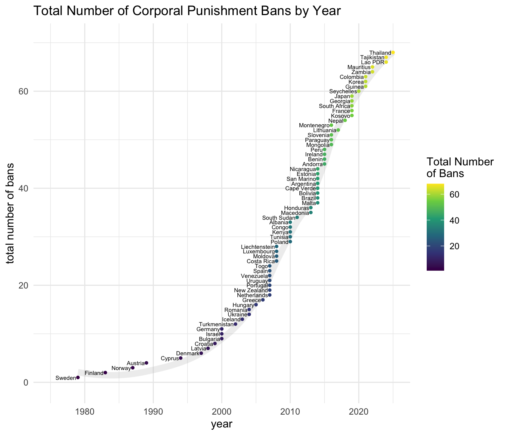

Country Level Bans on Corporal Punishment
1 Background
65 countries have instituted country wide bans upon the use of corporal punishment with children. The most recent country to institute a ban is Mauritius.
Information on countries that have banned corporal punishment available from endcorporalpunishment.org
2 Visualizations
